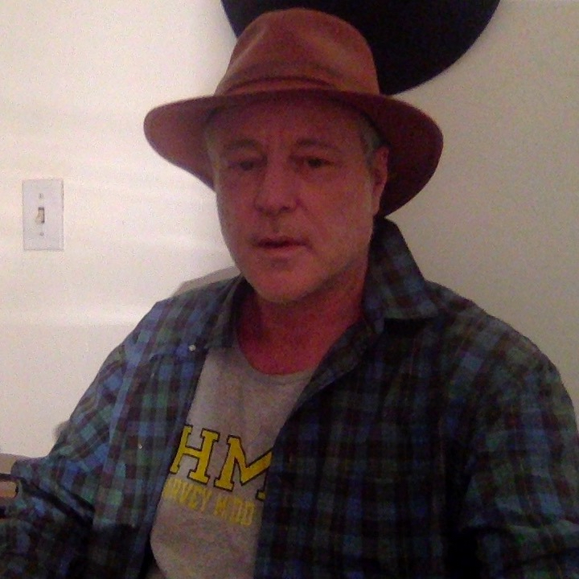

About Us
About Us

Ian Beardsley studied physics at The University of Oregon and worked in astronomy For four years at the state observatory, Pine Mountain Observatory in the high desert East of Bend, Oregon. His name appears on several papers in the Astrophysical Journal.
Proton-Seconds And Electron... by Ian Beardsley
An Approach: Proton-Seconds by Ian Beardsley
Stokes Theorem, Divergence ... by Ian Beardsley
The Method of Proton Seconds by Ian Beardsley
The Sexagesimal Calendar An... by Ian Beardsley
The Elements, Proton-Second... by Ian Beardsley
Archaeology of other Starsy... by Ian Beardsley
From Life To The Planets by Ian Beardsley
Proton-Seconds And Natural ... by Ian Beardsley
Asteroids Meteors 1 to 7 by Ian Beardsley
The Quintessential Elements by Ian Beardsley
Essays In Cosmic Archaeolog... by Ian Beardsley
Five Fold Symmetry by Ian Beardsley
Essays In Cosmic Archaeolog... by Ian Beardsley
Introducing the Concept of ... by Ian Beardsley